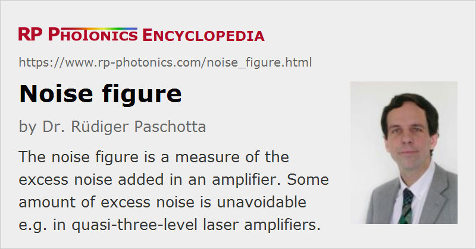

Noise Figure
Definition: a measure of the excess noise added in an amplifier
German: Rauschzahl
Categories: optical amplifiers, fluctuations and noise
Formula symbol: F
Units: dB
How to cite the article; suggest additional literature
Author: Dr. Rüdiger Paschotta
The noise figure F of an optical amplifier (e.g. a fiber amplifier or semiconductor optical amplifier) is a measure of how much excess noise the amplifier adds to the signal. More precisely, it is a factor which indicates how much higher the noise power spectral density of the amplified output is compared with the input noise power spectral density times the amplification factor G, assuming that the input noise is at the shot noise level:
The assumption of a shot-noise-limited input is important: of course, the relative increase of the noise level is smaller if the input signal has strong excess noise.
The noise figure is often specified in decibels (dB), i.e. as ten times the logarithm (to base 10) of F. A (hypothetical) noiseless amplifier would have a noise figure of 1, corresponding to 0 dB.
The significance of excess noise of an amplifier is lower for higher input noise levels. For example, if two amplifier stages are used in series, the second stage is fed with noise well above the shot noise limit (assuming that the first stage has significant gain). Therefore, the excess noise of the second stage is not very relevant (unless it is very strong), and it does not contribute significantly to the noise figure of the amplifier chain.
Quantum Noise of Optical Amplifiers
An important result of quantum optics [1] is that a phase-insensitive high-gain optical amplifier has a noise figure of at least 3 dB. This limit can be reached for a four-level laser amplifier, a non-degenerate optical parametric amplifier, or a Raman amplifier, whereas quasi-three-level amplifiers have higher noise figures. The noise figure can be increased by excess losses at the amplifier input. Noise figures below 3 dB are only possible for phase-sensitive amplifiers, based on, e.g., degenerate parametric amplification.
The noise figure is often relevant for amplifiers used in optical fiber communications. Erbium-doped fiber amplifiers, fiber Raman amplifiers and semiconductor optical amplifiers have non-ideal noise figures, which depend on design details, and can be increased further e.g. due to extra signal losses at the input end. In quasi-three-level amplifiers, the noise figure is larger for backward pumping, i.e., when the pump light propagates in the direction opposite to that of the signal light.
Noise Figure of Electronic Amplifiers
Note that the noise figure of electronic amplifiers is defined differently: the thermal noise level rather than the shot noise level is taken as a basis. This is essentially because thermal noise is the limiting factor for electronics, where the photon energy is far below the thermal energy due to the much lower frequencies.
Questions and Comments from Users
Here you can submit questions and comments. As far as they get accepted by the author, they will appear above this paragraph together with the author’s answer. The author will decide on acceptance based on certain criteria. Essentially, the issue must be of sufficiently broad interest.
Please do not enter personal data here; we would otherwise delete it soon. (See also our privacy declaration.) If you wish to receive personal feedback or consultancy from the author, please contact him e.g. via e-mail.
By submitting the information, you give your consent to the potential publication of your inputs on our website according to our rules. (If you later retract your consent, we will delete those inputs.) As your inputs are first reviewed by the author, they may be published with some delay.
Bibliography
| [1] | C. M. Caves, “Quantum limits on noise in linear amplifiers”, Phys. Rev. D 26 (8), 1817 (1982), doi:10.1103/PhysRevD.26.1817 |
| [2] | R. Olshansky, “Noise figure for erbium-doped optical fibre amplifiers”, Electron. Lett. 24, 1363 (1988), doi:10.1049/el:19880933 |
| [3] | E. Desurvire, “Analysis of noise figure spectral distribution in erbium-doped fiber amplifiers pumped near 980 nm and 1480 nm”, Appl. Opt. 29 (21), 3118 (1990), doi:10.1364/AO.29.003118 |
| [4] | E. Desurvire, “Spectral noise figure of Er3+-doped fiber amplifiers”, IEEE Photon. Technol. Lett. 2 (3), 208 (1990), doi:10.1109/68.50891 |
| [5] | H. A. Haus, “The noise figure of optical amplifiers”, IEEE Photon. Technol. Lett. 10 (11), 1602 (1998), doi:10.1109/68.726763 |
| [6] | E. Desurvire, “Comments on 'The Noise Figure of Optical Amplifiers'”, IEEE Photon. Technol. Lett. 11 (5), 620 (1999), doi:10.1109/68.759418 |
See also: amplifier noise, quantum noise, laser noise, optical amplifiers, shot noise, noise specifications, The Photonics Spotlight 2007-01-27
and other articles in the categories optical amplifiers, fluctuations and noise
|  |
If you like this page, please share the link with your friends and colleagues, e.g. via social media:
These sharing buttons are implemented in a privacy-friendly way!